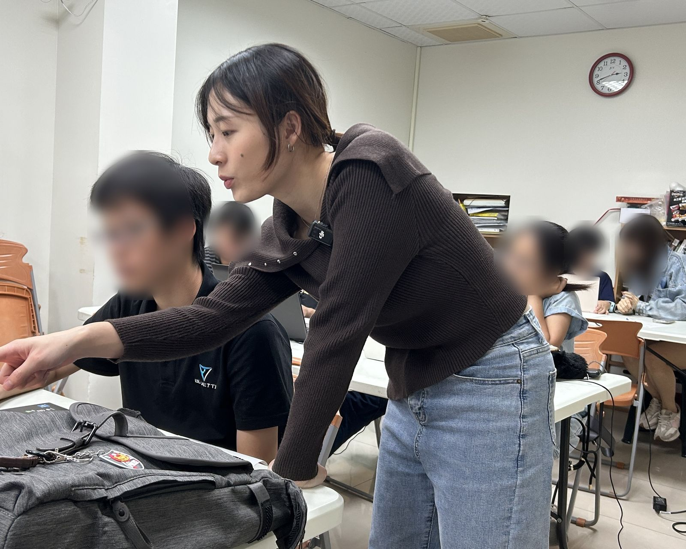
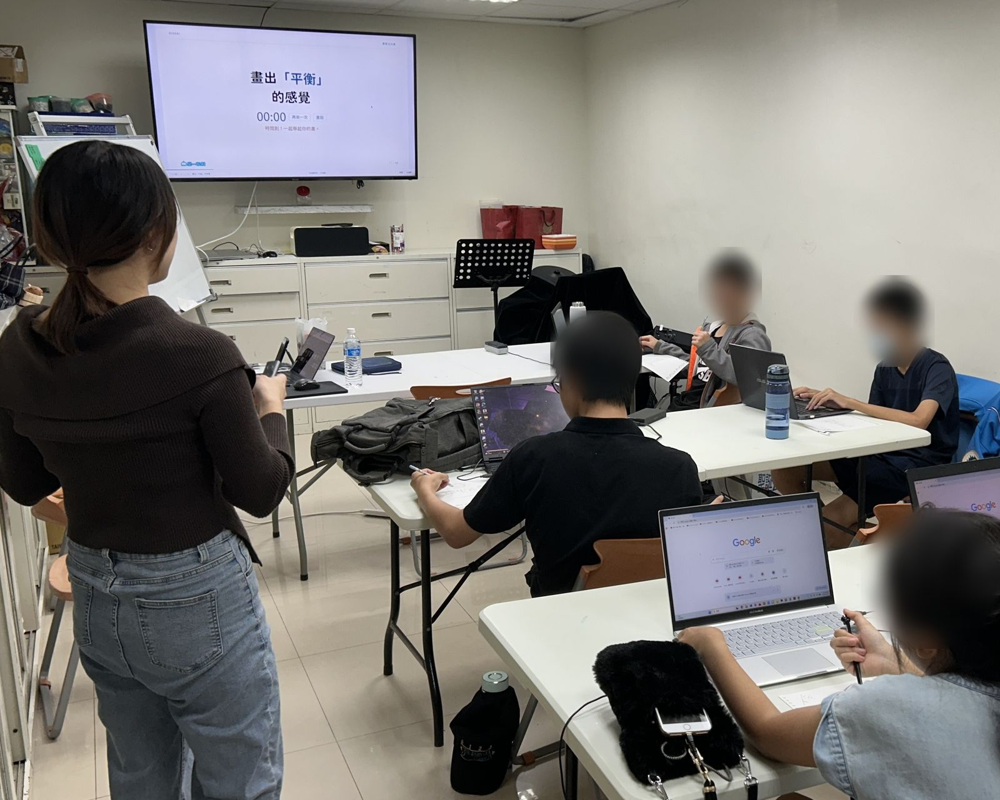
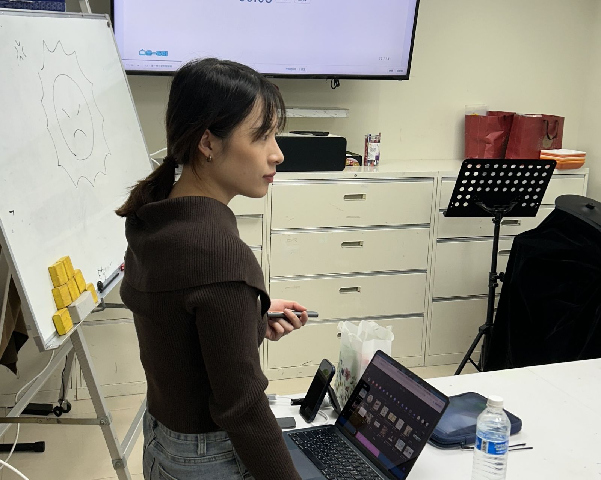
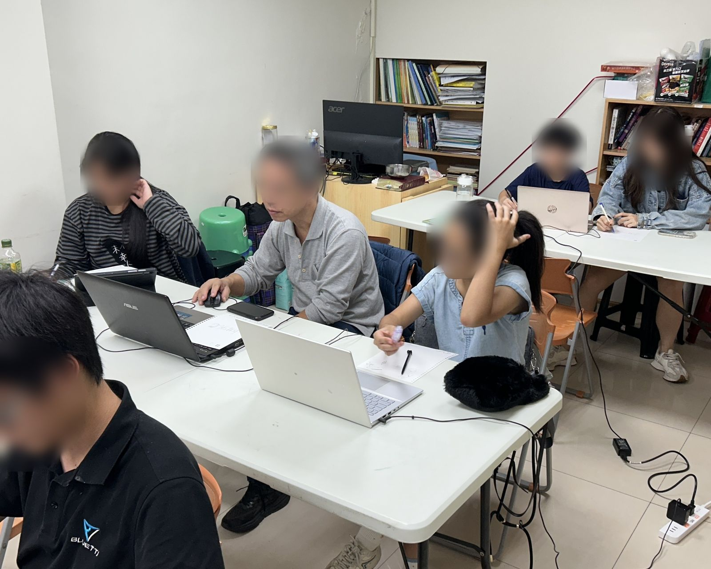
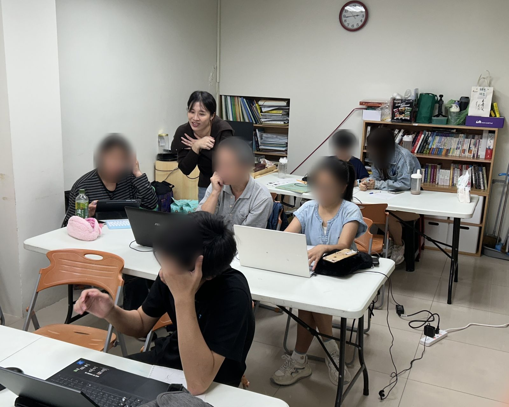

WORKSHOP · 2026.11.15
把你的想法告訴 AI：
做出有自己風格的節日卡片
兒童 AI 素養工作坊。帶國小到國中的孩子認識生成式 AI 怎麼「理解」一句話，
練習和 AI 一來一往地討論，最後用 Gemini 生圖、Canva 排版，做出屬於自己的卡片。
- 約 10 位國小到國中學生
- 3 個任務從理解到實作
- Gemini × Canva生圖與排版


任務一 · 知道 Prompt 的重要性
同一句話，每個人想的畫面都不一樣
請孩子各自畫出「生氣的太陽」「平衡」「可愛的聖誕樹」，再一起比較。大家很快發現：同一句話，會被不同的人理解成完全不同的畫面。
AI 也一樣，想要它做出你心中的樣子，就得把想法說清楚。

任務二 · 練習和 AI 討論
從一句模糊的要求，到一張清楚的設計圖
用「太空貓聖誕卡」示範：先只說一句話，再一步步補上收卡人、主角、配色和字數，看看 AI 的作品怎麼變得越來越貼近想像。
兩招就夠用：請 AI 反問你，或請 AI 給你選項。

任務三 · 實際動手做
規劃、生圖、排版，再改一版
孩子先用卡片任務表規劃內容，用 Gemini 生出主圖，再到 Canva 排版。做完初版後複製一份修改，最後要說出自己保留了什麼、改了什麼，以及為什麼。

TAKEAWAY
自己越強，AI 就越強。
AI 是幫你把想法變成作品的夥伴，但想清楚要做什麼、判斷好不好，還是要靠自己。
邀請兒童 AI 素養課程